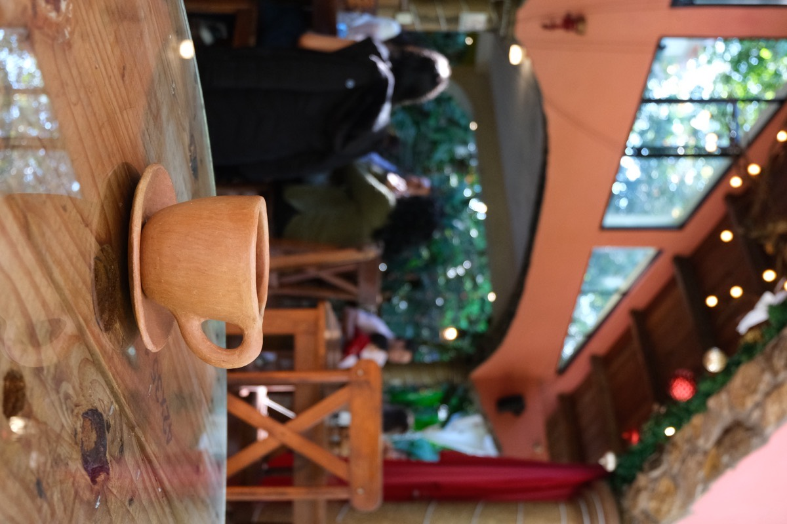
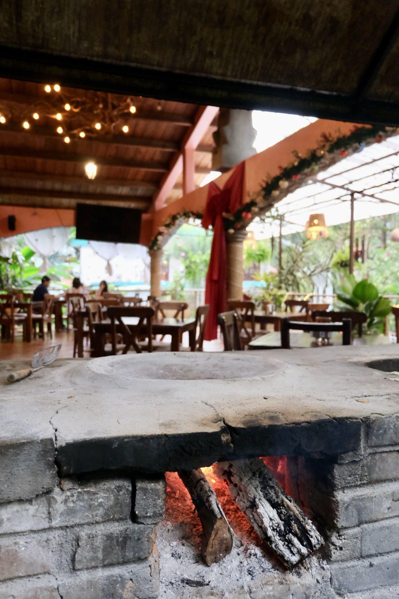

Guía de viaje
Guía para visitar Las Pozas de Xilitla
Todo lo que necesitas saber del Castillo de Edward James: horarios, precios, cómo llegar y los mejores consejos para tu visita.
Leer guía →
Gastronomía
5 platillos imperdibles de la cocina huasteca
Bocoles, enchiladas huastecas, cecina, zacahuil y más: los sabores que tienes que probar en la Huasteca Potosina.
Leer artículo →
Guía de viaje
Qué hacer en Xilitla: guía de 2 días
Un itinerario completo para aprovechar al máximo el Pueblo Mágico de Xilitla, desde Las Pozas hasta sus cafés y miradores.
Leer guía →